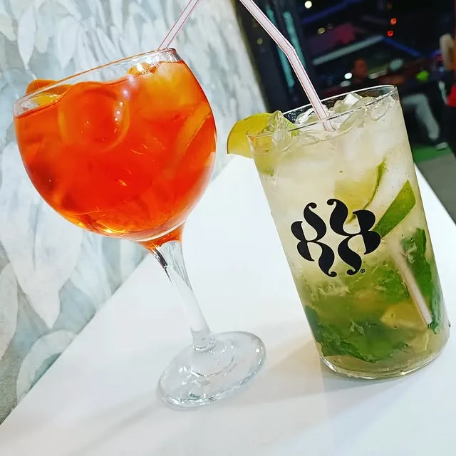
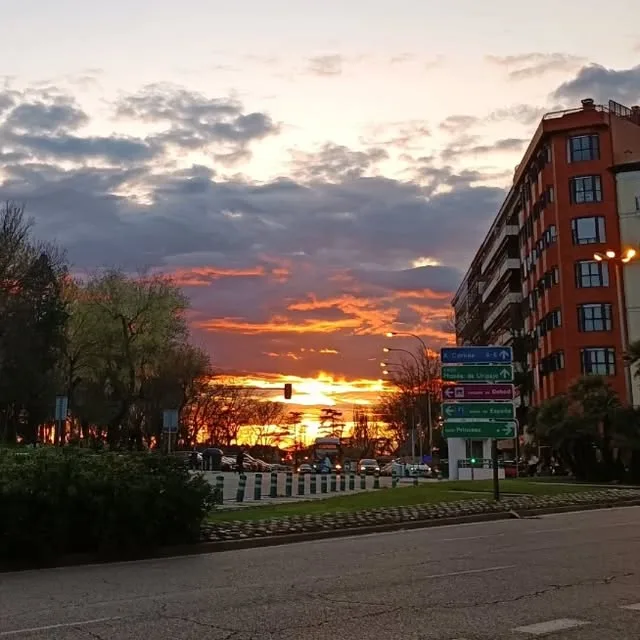
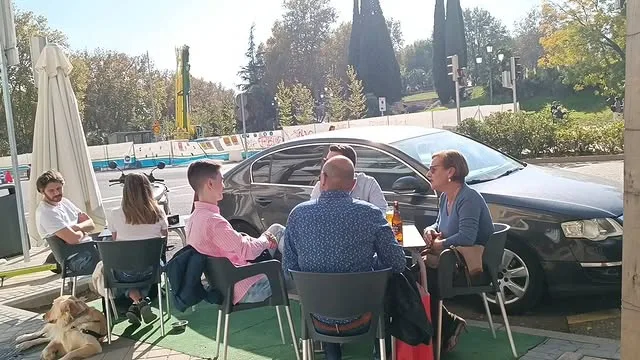
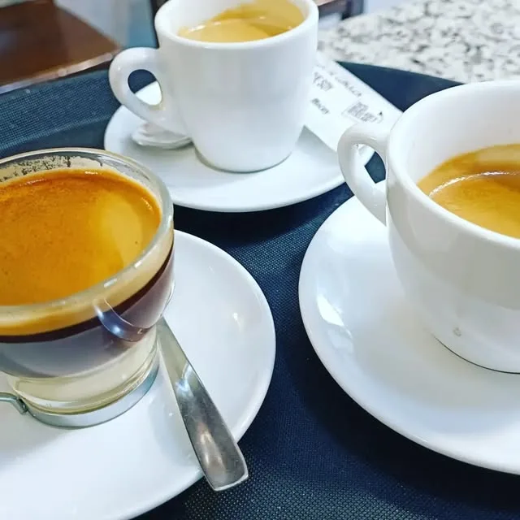
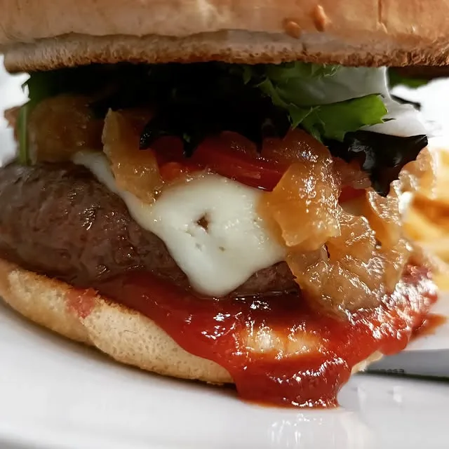
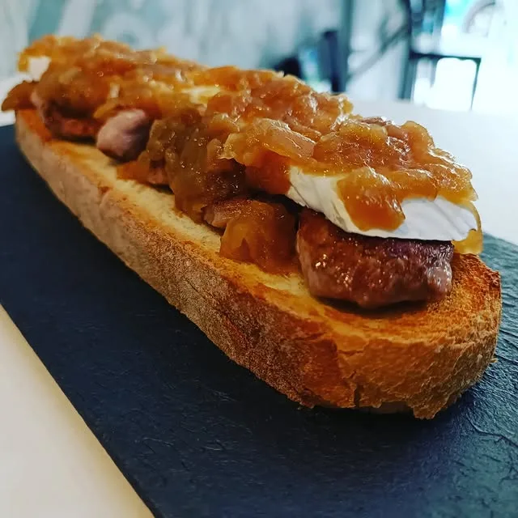
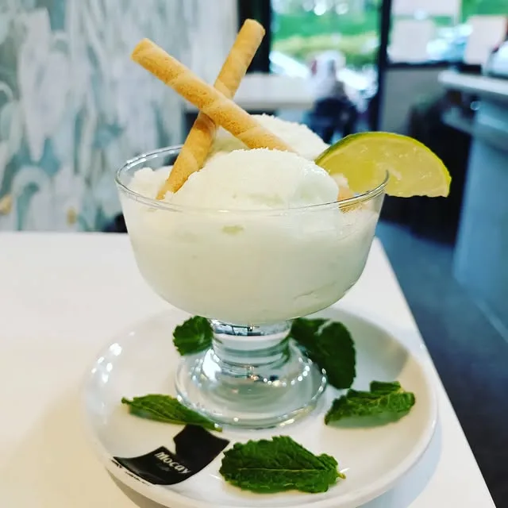

Copas & cócteles
Mojitos y Aperol
El clásico de la terraza, recién hecho.

El atardecer está servido.
Tapas, desayunos y copas en la mejor terraza de Madrid — justo frente al Templo de Debod. Ven a ver caer el sol con un mojito en la mano.
Justo enfrente del templo egipcio más bonito de Europa, nuestra terraza es ese rincón con encanto donde el día empieza con un café al sol y termina con una copa viendo el cielo encenderse. Tapeo honesto, buen rollo y las mejores vistas del barrio.

Cocina sencilla y rica, café de verdad y la coctelería que pide una terraza al sol. Esto es solo un aperitivo.

El clásico de la terraza, recién hecho.

Para empezar el día sin prisa, en la terraza.

Carne, queso fundido y cebolla caramelizada.

Con queso brie y cebolla caramelizada.

Fresquito, con menta, para el calor de Madrid.
La mejor "tapa" de la casa no se cobra.
Madrid presume de uno de los atardeceres más bonitos del mundo justo aquí, sobre el Templo de Debod. Y nosotros tenemos la primera fila — con la copa ya servida.
Reserva tu atardecer